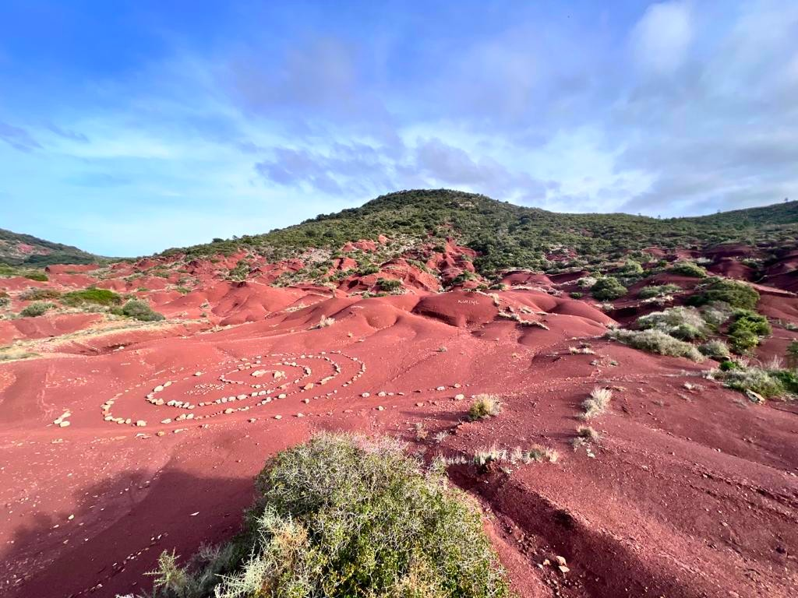
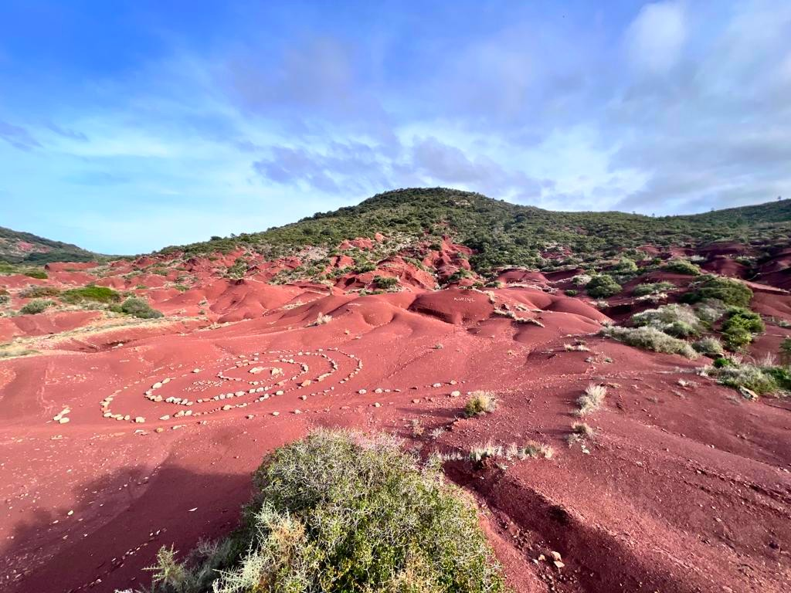

Saint-Saturnin de Lucian
Saint-Saturnin-de-Lucian est une commune française située dans le nord du département de l'Hérault (34) en région Occitanie. Nous avons fait cette randonnée le Dimanche 27 Novembre avec 10 personnes. Nous avons pu découvrir les rochers des deux vierges et le canyon du diable (terre rouge). Dans l'ensemble, c'était magnifique !
Un paysage semblable à celui de l'Ouest Américain, coloré, naturel et curieux. C'est un lieu parmi les plus intéressants de la région. Cependant, attention de ne pas vous perdre dans le canyon.

 
